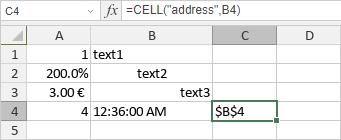

CELL funkcija
Funkcija CELL je jedna od informacionih funkcija. Koristi se za vraćanje informacija o formatiranju, lokaciji ili sadržaju ćelije.
Sintaksa
CELL(info_type, [reference])
Funkcija CELL ima sledeće argumente:
| Argument | Opis |
|---|---|
| info_type | Tekstualna vrednost koja određuje koju informaciju o ćeliji želite da dobijete. Ovo je obavezan argument. Dostupne vrednosti su navedene u tabeli ispod. |
| reference | Ćelija o kojoj želite da dobijete informacije. Ako se izostavi, informacije se vraćaju za poslednju izmenjenu ćeliju. Ako je argument reference naveden kao opseg ćelija, funkcija vraća informacije za gornju levu ćeliju opsega. |
Argument info_type može biti jedan od sledećih:
| Tekstualna vrednost | Tip informacije |
|---|---|
| "address" | Vraća referencu na ćeliju. |
| "col" | Vraća broj kolone u kojoj se ćelija nalazi. |
| "color" | Vraća 1 ako je ćelija formatirana u boji za negativne vrednosti; u suprotnom vraća 0. |
| "contents" | Vraća vrednost koju ćelija sadrži. |
| "filename" | Vraća naziv datoteke koja sadrži ćeliju. |
| "format" | Vraća tekstualnu vrednost koja odgovara numeričkom formatu ćelije. Tekstualne vrednosti su navedene u tabeli ispod. |
| "parentheses" | Vraća 1 ako je ćelija formatirana sa zagradama za pozitivne ili sve vrednosti; u suprotnom vraća 0. |
| "prefix" | Vraća jednostruki navodnik (') ako je tekst u ćeliji poravnat ulevo, dvostruki navodnik (") ako je tekst poravnat udesno, znak ^ ako je tekst centriran, i prazan tekst ("") ako ćelija sadrži bilo šta drugo. |
| "protect" | Vraća 0 ako ćelija nije zaključana; vraća 1 ako je ćelija zaključana. |
| "row" | Vraća broj reda u kojem se ćelija nalazi. |
| "type" | Vraća "b" za praznu ćeliju, "l" za tekstualnu vrednost i "v" za bilo koju drugu vrednost u ćeliji. |
| "width" | Vraća širinu ćelije, zaokruženu na ceo broj. |
Ispod možete videti tekstualne vrednosti koje funkcija vraća za argument "format"
| Format broja | Vraćena tekstualna vrednost |
|---|---|
| Opšti | G |
| 0 | F0 |
| #,##0 | ,0 |
| 0.00 | F2 |
| #,##0.00 | ,2 |
| $#,##0_);($#,##0) | C0 |
| $#,##0_);[Red]($#,##0) | C0- |
| $#,##0.00_);($#,##0.00) | C2 |
| $#,##0.00_);[Red]($#,##0.00) | C2- |
| 0% | P0 |
| 0.00% | P2 |
| 0.00E+00 | S2 |
| # ?/? or # ??/?? | G |
| m/d/yy or m/d/yy h:mm or mm/dd/yy | D4 |
| d-mmm-yy or dd-mmm-yy | D1 |
| d-mmm or dd-mmm | D2 |
| mmm-yy | D3 |
| mm/dd | D5 |
| h:mm AM/PM | D7 |
| h:mm:ss AM/PM | D6 |
| h:mm | D9 |
| h:mm:ss | D8 |
Napomene
Imajte u vidu da je ovo formula niza. Da biste saznali više, pročitajte članak Umetanje formula niza.
Kako primeniti funkciju CELL.
Primeri
Slika ispod prikazuje rezultat koji vraća funkcija CELL.
